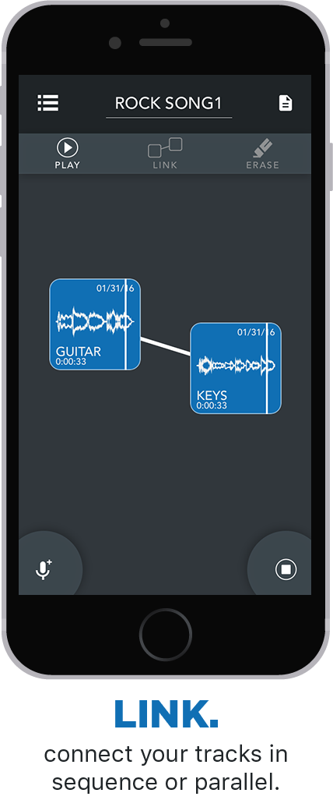
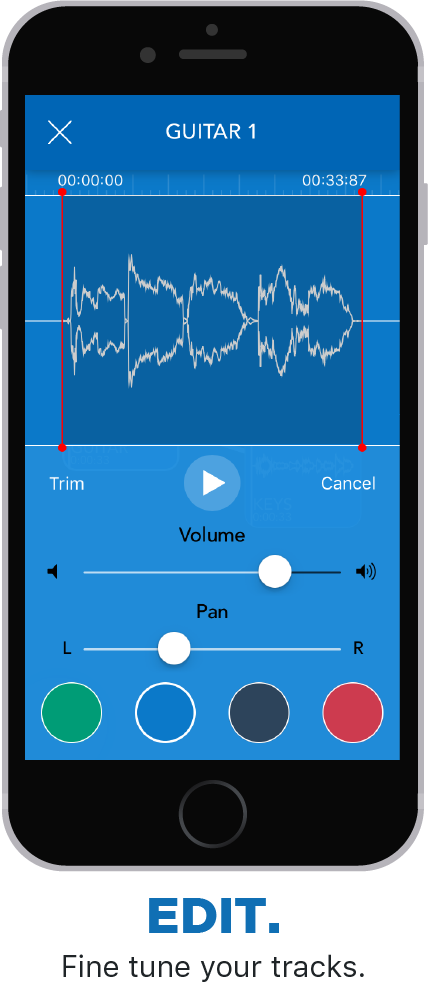

tracks
iOS music app
summary
Tracks is an iOS application for mobile songwriting. With the application, users can quickly record, edit and arrange audio. Users can piece together songs by linking tracks together and adding lyrics or notes to any project.
motivation
For many musicians, inspiration can strike at a moment's notice. These fledgling ideas don't yet belong in a digital audio workstation, but need to be jotted down like notes. Often the easiest way to capture these musical ideas is to quickly record them in the Voice Memos app on your iPhone. As a songwriter myself, I found that I was doing this a lot. And so were many of the musicians I interviewed. Great ideas would regularly end up in the Voice Memos graveyard, unorganized in a sea of recordings. It is clear to me that there is a missing piece in the process of creating song demos. There is not a tool to help you organize your recordings and build on ideas with multiple parts. It seems the only options are all or nothing.
solution
In early 2015, I set out to build Tracks Music to fill in the missing piece of mobile music creation. With Tracks, your recordings are organized into different projects. Each project can contain up to twenty five-minute recordings, each of which can be edited and linked with other tracks to play in sequence or parallel. This allows you to shape your recordings into a song and hear what different parts sound like together. Tracks Music also allows you to include lyrics or notes within each project. I took an open ended approach with this app because I believe it will be used in many ways. Everyone has their own habbits for songwriting. My goal was for this app to feel like a notepad for musical ideas. Everything you need to put together a demo is now in one place, and songwriting just got easier than ever before.